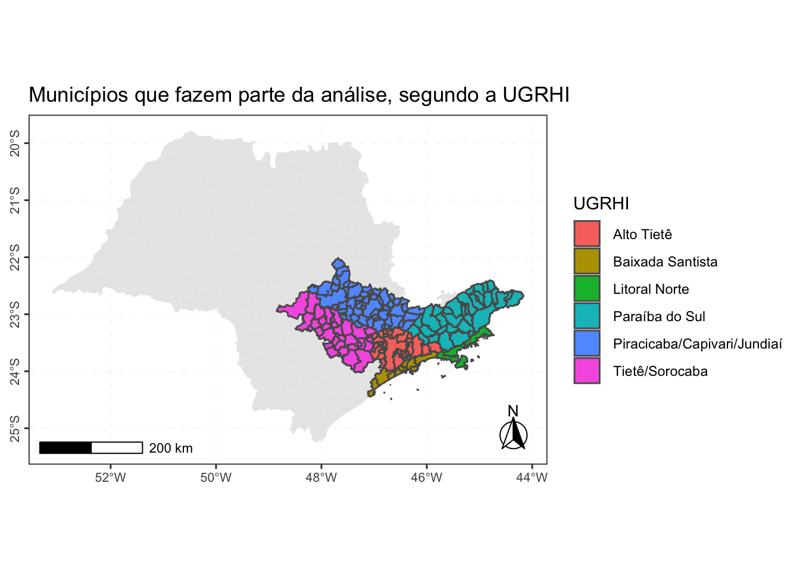
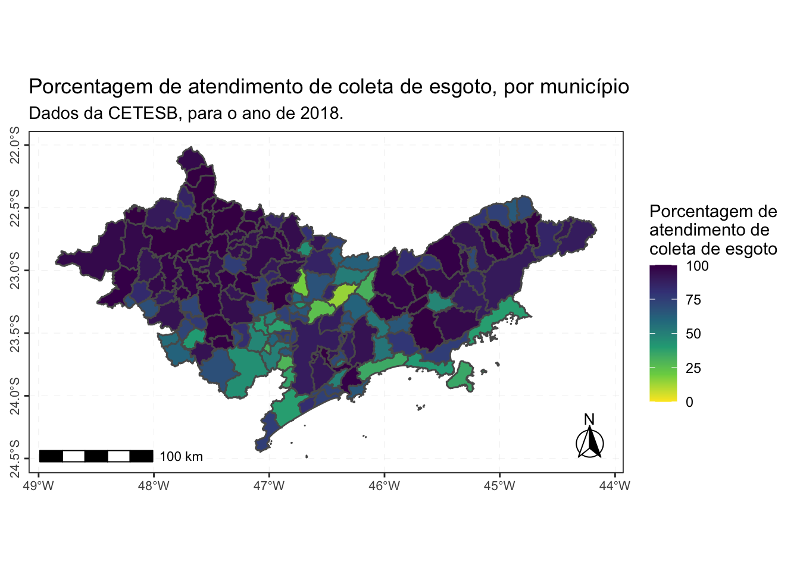
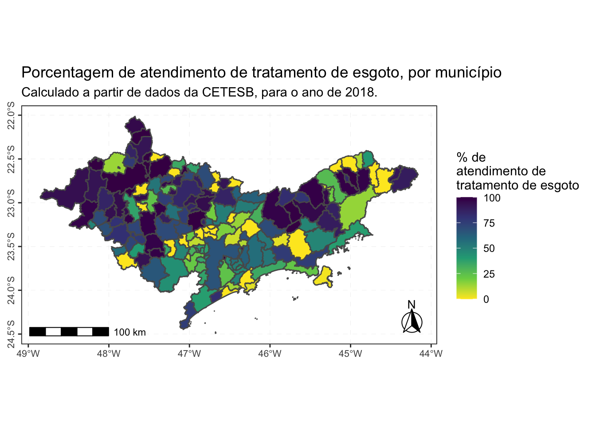

Como eu estou meses sem postar nada no blog, resolvi postar um código adaptado, referente a um projeto final que realizei para a disciplina “FLS6397 - Introdução à Análise de Dados, Programação e Visualização para as Ciências Sociais”. A disciplina ocorreu no primeiro semestre de 2020, na FFLCH/USP (porém devido à pandemia, a maior parte das aulas foi online). Na página da disciplina, está disponível tutoriais com todo o conteúdo da disciplina, de graça e aberto para todes!
As instruções para a realização do projeto estão disponíveis na página da disciplina.
Dados utilizados
Dados de Saneamento: A Companhia Ambiental do Estado de São Paulo (CETESB)1 publica todos os anos o “Relatório de Qualidade das Águas Interiores do Estado de São Paulo”. Desde o relatório referente ao ano de 2016, é publicado o Apêndice C, que contém dados de saneamento por município do Estado de São Paulo. Os arquivos são disponibilizados em arquivo PDF, e especificamente para o ano de 2016 é um arquivo PDF que não possibilita copiar as informações (como uma imagem, por exemplo). O relatório mais recente é referente ao ano de 2018.
Dados shapefile dos municípios: Foi utilizado o pacote geobr (Pereira and Goncalves 2021), que possibilita acessar dados espaciais oficiais do Brasil.
Neste post, irei focar em mostrar como abri os dados, e utilizando principalmente o tidyverse (Wickham et al. 2019) e o pacote geobr (Pereira and Goncalves 2021), criei mapas com esses dados.
Pacotes necessários
O que é :: ?
Nos códigos abaixo, muitas vezes me refiro à uma função utilizando o formato pacote::funcao(), sendo que o que vem antes dos :: é o nome do pacote em qual à função pertence, e depois dos :: é o nome da função que quero usar.
Isso é útil pois:
Caso o pacote não esteja carregado com a função
library(pacote), ainda sim o R entenderá qual função você está se referindo, e executará o código.Caso você se refira à uma função apenas pelo nome (sem considerar o
::), em uma situação onde você carregou pacotes diferentes que possuem funções com nome igual, a função do pacote carregado por último será utilizada. Isso pode causar a execução de uma função indesejada. Portanto, utilizar o::ajuda a garantir a utilização da função desejada.
Abrir e arrumar as bases brutas
Dados de Saneamento
O primeiro passo é fazer o download do arquivo PDF referente ao Apêndice C e converter em CSV. A função download.file() possibilita fazer download de arquivos diretamente do R.
# Link do relatório
url <-
"https://cetesb.sp.gov.br/aguas-interiores/wp-content/uploads/sites/12/2019/10/Ap%C3%AAndice-C_Dados-de-Saneamento-por-Munic%C3%ADpio.pdf"
#Fazer o download do arquivo PDF
download.file(url, # URL do arquivo a ser baixado
destfile = "dados/apendice_c_2018.pdf", # Informar onde quer que seja salvo, e com qual nome e extensão
method = "curl" # Método utilizado para o download
)Para fazer a conversão, utilizei o pacote pdftables (Persson 2016), que possibilita converter o arquivo PDF para CSV diretamente do R, através da API (e omiti a minha chave da API no código):
O que é API?
É a sigla para “Application Programming Interfaces”, ou em português, “Interface de programação de aplicações”.
Neste exemplo, caso não fosse utilizar a API, seria necessário realizar o upload do arquivo PDF no site PDFTables, e depois baixar o arquivo convertido.
Para utilizar a API, é necessário fazer um cadastro no site, e na aba API é disponibilizado a chave da API para utilizá-la. Posteriormente, pode-se utilizar a função pdftables::convert_pdf() para fazer a conversão diretamente do R. Isso é muito útil quando temos uma grande quantidade de arquivos, e também para deixar registrado a etapa realizada.
Caso queira saber mais sobre APIs, leia essa página do material da Curso-R.
# Converter o arquivo PDF em CSV. Utilizei a API que obtive no site, mas para compilar, omiti a API key.
pdftables::convert_pdf("dados/apendice_c_2018.pdf",
# Arquivo para converter
output_file = "dados/apendice_c_2018.csv",
# Informar onde quer o arquivo gerado
# seja salvo, e com qual nome e extensão
api_key = "..." # Chave da API, gerada através do site.
)A tabela convertida em .csv pode ser acessada neste link. O próximo passo é carregar a base, usando a função readr::read_csv():
apendice_c_2018 <-
readr::read_csv(
"dados/apendice_c_2018.csv", # Qual arquivo CSV quero carregar
col_names = c(
# define o nome das colunas
"ugrhi",
"municipio",
"consessao",
"pop_urbana",
"atendimento_coleta_porc",
"atendimento_tratamento_porc",
"eficiencia",
"carga_poluidora_potencial",
"carga_poluidora_remancescente",
"ictem",
"corpo_receptor"
),
locale = readr::locale(encoding = "ISO-8859-1"),
# encoding dos dados
skip = 5 # Quantas linhas para pular no CSV antes de começar a ler os dados.
)Encoding?
Uma das informações importantes que utilizei na função para ler os dados no R, no código acima, é o Encoding. O Encoding está relacionado à codificação dos caracteres. Você já carregou uma base de dados onde os caracteres apareceram desconfigurados, como na imagem abaixo? Provavelmente era um erro de Encoding!

Ao carregar um arquivo, é util saber em qual encoding ele foi salvo.
O recomendado ao salvar um arquivo é utilizar o encoding UTF-8.2
- A base deve conter 645 linhas, referente ao número de municípios no estado de São Paulo3:
nrow(apendice_c_2018) # consulta quantas linhas tem na base[1] 701A base contém mais linhas do que municípios. O código abaixo retira linhas que apenas contém NA, e linhas que não apresentam dados dos municípios:
Agora a base tem 645 linhas, o que corresponde aos 645 municípios do estado de SP. É importante também verificar o tipo de dados nas colunas:
tibble::glimpse(apendice_c_filtrado)Rows: 645
Columns: 11
$ ugrhi <chr> "1", "1", "1", "2", "2", "2", "2", "2", …
$ municipio <chr> "Campos do Jordão", "Santo Antônio do Pi…
$ consessao <chr> "SABESP", "SABESP", "SABESP", "SAAE", "S…
$ pop_urbana <chr> "51440", "4033", "5224", "35604", "1863"…
$ atendimento_coleta_porc <chr> "52", "47", "92", "70", "91", "100", "89…
$ atendimento_tratamento_porc <chr> "100", "100", "75", "28", "100", "0", "1…
$ eficiencia <chr> "97", "80", "76", "70", "82", NA, "62", …
$ carga_poluidora_potencial <chr> "2.778", "218", "282", "1.923", "101", "…
$ carga_poluidora_remancescente <chr> "1.377", "136", "133", "1.659", "26", "1…
$ ictem <chr> "6,06", "4,65", "6,14", "2,56", "8,22", …
$ corpo_receptor <chr> "Rio Capivari, Rio Sapucaí-Guaçu e aflue…Algumas colunas são de dados numéricos mas que foram carregadas como texto (<chr>), portanto devem ser convertidas para o tipo correto (possível com a função dplyr::mutate():
apendice_c <- apendice_c_filtrado %>%
dplyr::mutate(
pop_urbana = as.double(pop_urbana) ,
atendimento_coleta_porc = as.double(atendimento_coleta_porc),
atendimento_tratamento_porc = as.double(atendimento_tratamento_porc),
eficiencia = as.double(eficiencia),
# As conversões abaixo tem uma etapa a mais, devido à padronização diferente utilizada na base,
#com o ponto e a vírgula para representar as casas decimais:
carga_poluidora_potencial = stringr::str_replace_all(carga_poluidora_potencial, "\\.", "") %>%
as.double(),
carga_poluidora_remancescente = stringr::str_replace_all(carga_poluidora_remancescente, "\\.", "") %>%
as.double(),
ictem = stringr::str_replace_all(ictem, ",", "\\.") %>% as.double()
)Agora podemos observar novamente o tipo de dados nas colunas, e verificar se todos os dados estão no formato ideal para a análise:
tibble::glimpse(apendice_c)Rows: 645
Columns: 11
$ ugrhi <chr> "1", "1", "1", "2", "2", "2", "2", "2", …
$ municipio <chr> "Campos do Jordão", "Santo Antônio do Pi…
$ consessao <chr> "SABESP", "SABESP", "SABESP", "SAAE", "S…
$ pop_urbana <dbl> 51440, 4033, 5224, 35604, 1863, 2598, 86…
$ atendimento_coleta_porc <dbl> 52, 47, 92, 70, 91, 100, 89, 100, 100, 8…
$ atendimento_tratamento_porc <dbl> 100, 100, 75, 28, 100, 0, 100, 99, 100, …
$ eficiencia <dbl> 97, 80, 76, 70, 82, NA, 62, 75, 86, 89, …
$ carga_poluidora_potencial <dbl> 2778, 218, 282, 1923, 101, 140, 470, 432…
$ carga_poluidora_remancescente <dbl> 1377, 136, 133, 1659, 26, 140, 210, 1125…
$ ictem <dbl> 6.06, 4.65, 6.14, 2.56, 8.22, 1.50, 6.92…
$ corpo_receptor <chr> "Rio Capivari, Rio Sapucaí-Guaçu e aflue…Agora a base está pronta para uso!
Dados shapefile dos município
Os dados foram obtidos com o pacote geobr:
# Lê a base de dados espaciais (do tipo Shapefile) dos municípios do Estado de São Paulo,
# no ano de 2018, segundo o IBGE.
# Os dados salvos são da classe Simple Feature
municipios_sp <- geobr::read_municipality("SP", 2018)O pacote geobr (Pereira and Goncalves 2021) é um pacote que disponibiliza funções para realizar o download de diversas bases de dados espaciais oficiais do Brasil. Você pode saber mais no repositório do pacote no GitHub.
O pacote sf (Simple Features for R) (Pebesma 2022, 2018) possibilita trabalhar com essas bases de dados espaciais. Gosto muito da seguinte ilustação da Allison Horst sobre esse pacote:

Lista de UGRHIS
No projeto, defini como área de estudo os municípios das seguintes Unidades de Gerenciamento de Recursos Hídricos (UGRHI): Paraíba do Sul, Litoral Norte, Piracicaba/Capivari/Jundiaí, Alto Tietê, Baixada Santista e Tietê/Sorocaba. Essas UGRHIs foram escolhidas por estarem totalmente ou marjoritariamente no território da Macrometrópole Paulista (MMP) (considerando a delimitação do DAEE4).
Criei manualmente uma tibble com o número e nome das UGRHIs que farão parte da análise:
Unir as bases !
A base da CETESB não possui o código de município do IBGE (o ideal para fazer o Join). Neste caso, podemos usar o nome do município, porém é preciso padronizar os nomes em relação à maiúsculas/minúsculas, acentos, presença de traços, entre outros. A maior diferença encontrada foi na grafia do nome do município “São Luiz do Paraitinga”: segundo o site da Assembléia Legislativa do Estado de São Paulo, e o site do município, Luiz é escrito com Z, porém a base da CETESB utiliza a forma incorreta: “São Luís do Paraitinga”. Essas inconsistências foram corrigidas com código abaixo, usando principalmente funções dos pacotes stringr, dplyr e abjutils:
municipios_sp_limpo <-
municipios_sp %>% dplyr::mutate(
nome_muni = stringr::str_to_lower(name_muni),
nome_muni = stringr::str_replace_all(nome_muni, "-", " "),
nome_muni = abjutils::rm_accent(nome_muni)
)
apendice_c_limpo <- apendice_c %>% dplyr::mutate(
nome_muni = dplyr::case_when(
municipio == "São Luís do Paraitinga" ~
"São Luiz do Paraitinga",
TRUE ~ municipio
),
nome_muni = stringr::str_to_lower(nome_muni),
nome_muni = stringr::str_replace_all(nome_muni, "-", " "),
nome_muni = abjutils::rm_accent(nome_muni))- Após arrumar a base, podemos unir com as funções do tipo
join_*, do pacotedplyr(Sim, é possível usar as funções do tipojoin_*com objetos de classe Simple Feature, porém use-os como o primeiro argumento ao usar a função):
apendice_c_geo <-
dplyr::full_join(municipios_sp_limpo, apendice_c_limpo) %>%
dplyr::left_join(ugrhis)
apendice_c_geo %>% nrow() # Confirmando se a nova base tem o número de municípios do estado.[1] 645Ao unir as bases, temos colunas duplicadas ou desnecessárias, então é interessante removê-las. Após este procedimento, a base será filtrada para que apenas municípios que fazem parte das UGRHIs analisadas estejam na tibble gerada.
Além disso, o valor de porcentagem de atendimento de tratamento de esgoto é um valor de porcentagem em relação ao volume de esgoto coletado. Por exemplo, o município de Bertioga, segundo os dados da CETESB para 2018, apresenta uma porcentagem de coleta de apenas 34 % do esgoto gerado, e uma porcentagem de 100 % do esgoto tratado. Isso significa que 100 % do esgoto coletado é tratado, e não mostra a porcentagem de todo esgoto gerado que foi tratado. Para isso, criei também uma coluna (chamada porc_real_trat) onde é feito esse cálculo (utilizando a função mutate).
saneamento <- apendice_c_geo %>%
dplyr::select(-nome_muni,-municipio,-code_state) %>% # Remove colunas duplicadas
dplyr::filter(ugrhi %in% ugrhis$ugrhi) %>% # Filtra a coluna UGRHI. Apenas as UGRHIS que estão na tibble
# criada, permanecerão.
dplyr::mutate(porc_real_trat = atendimento_tratamento_porc * atendimento_coleta_porc / 100) # Cria uma nova
# coluna, com o cálculo do número real de porcentagem de tratamento de esgoto.A base final que usaremos na análise contém dados de 171 municípios, que fazem parte de 6 UGRHIs diferentes. A soma da população urbana destes municípios é de 32.79 milhões de habitantes, o que corresponde à 75.1 % da população urbana do Estado de São Paulo (segundo os dados da base completa utilizada nessa análise).
Visualizando os dados
Para evitar duplicação de código, o código abaixo é referente ao estilo do mapa, que aplicarei em todos os mapas seguintes.
tema_mapa <-
theme_bw() + # Escolhe o tema. Eu gosto do theme_bw() por ser bem simples/limpo
# Os códigos abaixo são referentes à estética do tema,
# como o tamanho da fonte, direção do texto,
# linhas ao fundo, etc.
theme(
axis.text.y = element_text(
angle = 90,
hjust = 0.5,
size = 8
),
axis.text.x = element_text(size = 8),
axis.title.y = element_text(size = rel(0.8)),
axis.title.x = element_text(size = rel(0.8)),
panel.grid.major = element_line(
color = gray(0.9),
linetype = "dashed",
size = 0.1
),
panel.background = element_rect(fill = "white") +
annotation_scale(location = "br", width_hint = 0.30)
)Com a função geom_sf(), é possível criar mapas utilizando o pacote ggplot2 e objetos de classe Simple Feature (sf). Assim podemos usar as nossas habilidades de criar gráficos lindos no ggplot2, e criar mapas também usando as funções que já conhecemos.
class(saneamento) # Função class() apresenta a classe do objeto. [1] "sf" "data.frame"O mapa abaixo apresenta os municípios que fazem parte da análise, segundo a UGRHI, e a localização destes municípios no Estado de São Paulo. Podemos usar mais de uma camada geom_sf() no mesmo mapa, da mesma forma que fazemos com o ggplot2:
saneamento %>% # Base de dados usada
ggplot() + # Inicia o gráfico ggplot
geom_sf(data = apendice_c_geo,
# Camada do mapa da base completa (Estado SP)
alpha = .9,
color = NA) +
geom_sf(aes(fill = nome_ugrhi)) + # Camada do mapa da base saneamento
# Adiciona Título e Legendas
labs(fill = "UGRHI",
title = "Municípios que fazem parte da análise, segundo a UGRHI") +
# Adiciona o Norte Geográfico
annotation_north_arrow(
location = "br",
which_north = "true",
height = unit(1, "cm"),
width = unit(1, "cm"),
pad_x = unit(0.1, "in"),
pad_y = unit(0.1, "in"),
style = north_arrow_fancy_orienteering
) +
ggspatial::annotation_scale() +
# Adiciona o tema criado anteriormente
tema_mapa 
O mapa abaixo apresenta a porcentagem de atendimento de coleta de esgoto, por município:
saneamento %>%
ggplot() +
geom_sf(aes(fill = atendimento_coleta_porc)) +
scale_fill_viridis_c(direction = -1, limits = c(0, 100)) + # Escala de cores
labs(fill = "Porcentagem de \natendimento de \ncoleta de esgoto",
title = "Porcentagem de atendimento de coleta de esgoto, por município",
subtitle = "Dados da CETESB, para o ano de 2018.") +
annotation_north_arrow(
location = "br",
which_north = "true",
height = unit(1, "cm"),
width = unit(1, "cm"),
pad_x = unit(0.1, "in"),
pad_y = unit(0.1, "in"),
style = north_arrow_fancy_orienteering
) +
ggspatial::annotation_scale() +
tema_mapa 
O mapa abaixo apresenta a porcentagem de atendimento de tratamento de esgoto, considerando o total de esgoto coletado, por município:
saneamento %>%
ggplot() +
geom_sf(aes(fill = porc_real_trat)) +
scale_fill_viridis_c(direction = -1, limits = c(0, 100)) +
labs(fill = "% de \natendimento de \ntratamento de esgoto ",
title = "Porcentagem de atendimento de tratamento de esgoto, por município",
subtitle = "Calculado a partir de dados da CETESB, para o ano de 2018.") +
annotation_north_arrow(
location = "br",
which_north = "true",
height = unit(1, "cm"),
width = unit(1, "cm"),
pad_x = unit(0.1, "in"),
pad_y = unit(0.1, "in"),
style = north_arrow_fancy_orienteering
) +
ggspatial::annotation_scale() +
tema_mapa 
Conclusão do post
Neste post, mostrei um caminho reprodutível e realizado utilizando o R:
Com o pacote
pdftables, é possível converter tabelas que estão em arquivos PDF para arquivos CSV.Com o pacote
geobr, é possível obter os arquivos shapefile para os mapas.Com as funções dos pacotes que fazem parte do
tidyverse, diversas etapas da análise de dados são possíveis: ler os dados no R, limpeza de dados, manipulação dos dados, cruzamento de bases de dados, visualização, e outros.
Recomendações para a base da CETESB
Adicionar uma explicação sobre cada coluna da base disponibilizada.
Seria melhor disponibilizar também o arquivo
.CSV. Não disponibilizar PDFs digitalizados (Ex: relatório do ano de 2016).Seria útil adicionar, para os próximos relatórios, a coluna de código IBGE do município. Isso facilitaria o cruzamento com outras bases de dados.
Verificar a grafia do nome dos municípios (está inconsistente com a lista de municípios da Assembléia Legislativa do Estado de São Paulo5): São Luiz do Paraitinga, Biritiba Mirim, Itaoca.
Informações sobre a sessão do R e RStudio
- As informações abaixo são interessantes para registrar a versão do R utilizada, versões de pacotes, entre outros.
sessioninfo::session_info()─ Session info ───────────────────────────────────────────────────────────────
setting value
version R version 4.1.2 (2021-11-01)
os macOS Big Sur 11.6.6
system aarch64, darwin20
ui X11
language (EN)
collate en_US.UTF-8
ctype en_US.UTF-8
tz America/Sao_Paulo
date 2022-06-12
pandoc 2.17.1.1 @ /Applications/RStudio.app/Contents/MacOS/quarto/bin/ (via rmarkdown)
─ Packages ───────────────────────────────────────────────────────────────────
package * version date (UTC) lib source
abjutils * 0.3.2 2022-02-01 [1] CRAN (R 4.1.1)
assertthat 0.2.1 2019-03-21 [1] CRAN (R 4.1.0)
bit 4.0.4 2020-08-04 [1] CRAN (R 4.1.0)
bit64 4.0.5 2020-08-30 [1] CRAN (R 4.1.0)
class 7.3-20 2022-01-13 [1] CRAN (R 4.1.1)
classInt 0.4-3 2020-04-07 [1] CRAN (R 4.1.0)
cli 3.3.0 2022-04-25 [1] CRAN (R 4.1.2)
colorspace 2.0-3 2022-02-21 [1] CRAN (R 4.1.1)
crayon 1.5.1 2022-03-26 [1] CRAN (R 4.1.1)
crul 1.2.0 2021-11-22 [1] CRAN (R 4.1.1)
curl 4.3.2 2021-06-23 [1] CRAN (R 4.1.0)
data.table 1.14.2 2021-09-27 [1] CRAN (R 4.1.1)
DBI 1.1.2 2021-12-20 [1] CRAN (R 4.1.1)
digest 0.6.29 2021-12-01 [1] CRAN (R 4.1.1)
dplyr * 1.0.9 2022-04-28 [1] CRAN (R 4.1.1)
e1071 1.7-9 2021-09-16 [1] CRAN (R 4.1.1)
ellipsis 0.3.2 2021-04-29 [1] CRAN (R 4.1.0)
evaluate 0.15 2022-02-18 [1] CRAN (R 4.1.1)
fansi 1.0.3 2022-03-24 [1] CRAN (R 4.1.1)
farver 2.1.0 2021-02-28 [1] CRAN (R 4.1.0)
fastmap 1.1.0 2021-01-25 [1] CRAN (R 4.1.0)
generics 0.1.2 2022-01-31 [1] CRAN (R 4.1.1)
geobr * 1.6.1 2021-04-16 [1] CRAN (R 4.1.0)
ggplot2 * 3.3.6 2022-05-03 [1] CRAN (R 4.1.1)
ggspatial * 1.1.5 2021-01-04 [1] CRAN (R 4.1.0)
glue 1.6.2 2022-02-24 [1] CRAN (R 4.1.1)
gtable 0.3.0 2019-03-25 [1] CRAN (R 4.1.0)
hms 1.1.1 2021-09-26 [1] CRAN (R 4.1.1)
htmltools 0.5.2.9000 2022-03-14 [1] Github (rstudio/htmltools@9490b62)
htmlwidgets 1.5.4 2021-09-08 [1] CRAN (R 4.1.1)
httpcode 0.3.0 2020-04-10 [1] CRAN (R 4.1.0)
httr 1.4.3 2022-05-04 [1] CRAN (R 4.1.1)
jsonlite 1.8.0 2022-02-22 [1] CRAN (R 4.1.1)
KernSmooth 2.23-20 2021-05-03 [1] CRAN (R 4.1.2)
knitr * 1.39 2022-04-26 [1] CRAN (R 4.1.1)
labeling 0.4.2 2020-10-20 [1] CRAN (R 4.1.0)
lifecycle 1.0.1 2021-09-24 [1] CRAN (R 4.1.1)
magrittr * 2.0.3 2022-03-30 [1] CRAN (R 4.1.1)
munsell 0.5.0 2018-06-12 [1] CRAN (R 4.1.0)
pdftables * 0.1 2016-02-15 [1] CRAN (R 4.1.0)
pillar 1.7.0 2022-02-01 [1] CRAN (R 4.1.1)
pkgconfig 2.0.3 2019-09-22 [1] CRAN (R 4.1.0)
proxy 0.4-26 2021-06-07 [1] CRAN (R 4.1.0)
purrr 0.3.4 2020-04-17 [1] CRAN (R 4.1.0)
R6 2.5.1 2021-08-19 [1] CRAN (R 4.1.1)
Rcpp 1.0.8.3 2022-03-17 [1] CRAN (R 4.1.1)
readr * 2.1.2 2022-01-30 [1] CRAN (R 4.1.1)
rlang 1.0.2 2022-03-04 [1] CRAN (R 4.1.1)
rmarkdown 2.14.2 2022-05-28 [1] Github (rstudio/rmarkdown@f2bfeec)
rstudioapi 0.13 2020-11-12 [1] CRAN (R 4.1.0)
s2 1.0.7 2021-09-28 [1] CRAN (R 4.1.1)
scales 1.2.0 2022-04-13 [1] CRAN (R 4.1.1)
sessioninfo 1.2.2 2021-12-06 [1] CRAN (R 4.1.1)
sf * 1.0-7 2022-03-07 [1] CRAN (R 4.1.1)
stringi 1.7.6 2021-11-29 [1] CRAN (R 4.1.1)
stringr * 1.4.0 2019-02-10 [1] CRAN (R 4.1.1)
tibble * 3.1.7 2022-05-03 [1] CRAN (R 4.1.1)
tidyselect 1.1.2 2022-02-21 [1] CRAN (R 4.1.1)
triebeard 0.3.0 2016-08-04 [1] CRAN (R 4.1.0)
tzdb 0.3.0 2022-03-28 [1] CRAN (R 4.1.1)
units 0.8-0 2022-02-05 [1] CRAN (R 4.1.1)
urltools 1.7.3 2019-04-14 [1] CRAN (R 4.1.0)
utf8 1.2.2 2021-07-24 [1] CRAN (R 4.1.0)
vctrs 0.4.1 2022-04-13 [1] CRAN (R 4.1.1)
viridisLite 0.4.0 2021-04-13 [1] CRAN (R 4.1.0)
vroom 1.5.7 2021-11-30 [1] CRAN (R 4.1.1)
withr 2.5.0 2022-03-03 [1] CRAN (R 4.1.1)
wk 0.6.0 2022-01-03 [1] CRAN (R 4.1.1)
xfun 0.31 2022-05-10 [1] CRAN (R 4.1.2)
yaml 2.3.5 2022-02-21 [1] CRAN (R 4.1.1)
[1] /Library/Frameworks/R.framework/Versions/4.1-arm64/Resources/library
──────────────────────────────────────────────────────────────────────────────O projeto foi realizado com R (R Core Team 2021), e os pacotes: abjutils (Lente and Trecenti 2022), dplyr (Wickham, François, et al. 2022), geobr (Pereira and Goncalves 2021), ggplot2 (Wickham, Chang, et al. 2022; Wickham 2016), ggspatial (Dunnington 2021), knitr (Xie 2022, 2015), magrittr (Bache and Wickham 2022), pdftables (Persson 2016), readr (Wickham, Hester, and Bryan 2022), rmarkdown (Allaire et al. 2022; Xie, Allaire, and Grolemund 2018), sf (Pebesma 2022, 2018), stringr (Wickham 2019), tibble (Müller and Wickham 2022).
Muito obrigada!
Ao Professor Jonathan Phillips, pelo oferecimento da disciplina “FLS6397 - Introdução à Análise de Dados, Programação e Visualização para as Ciências Sociais”, por sua disponibilidade para tirar as dúvidas de todes, disponibilização de todo material da aula na internet de forma aberta e gratuita, e pelo esforço para que a disciplina fosse proveitosa mesmo considerando o contexto de pandemia.
A Vanessa Escolano Maso, amiga, parceira na R-Ladies São Paulo e também na disciplina, pela companhia durante a disciplina e também por revisar e sugerir melhoras neste post.
Ao Maurício Vancine pela sua sugestão via twitter de utilizar a função
ggspatial::annotation_scale()para adicionar uma barra de escala nos gráficos.
References
Footnotes
https://cetesb.sp.gov.br/↩︎
https://support.rstudio.com/hc/en-us/articles/200532197-Character-Encoding↩︎
https://www.al.sp.gov.br/documentacao/municipios-paulistas/↩︎
Plano Diretor de Aproveitamento dos Recursos Hídricos para a Macrometrópole Paulista - http://www.daee.sp.gov.br/↩︎
https://www.al.sp.gov.br/documentacao/municipios-paulistas/↩︎